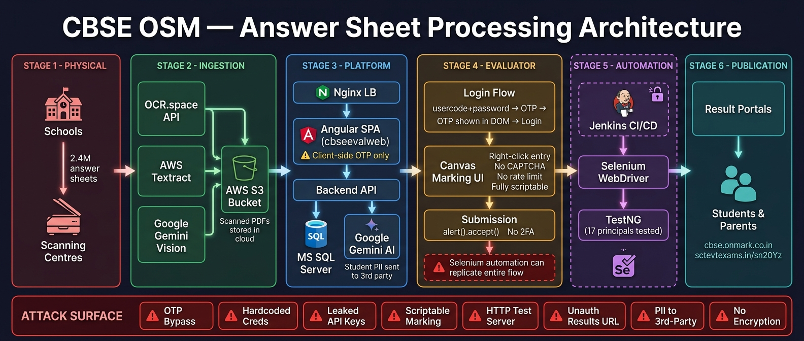

In February 2026, over 17.8 lakh students sat for their CBSE Class 12 board examinations. Their answer sheets — handwritten, scanned, and uploaded — were to be graded on a cloud-based platform called On-Screen Marking (OSM), operated by a Hyderabad-based company called Coempt EduTeck.
Security researcher Nisarga Adhikary disclosed critical vulnerabilities in the OSM portal in February 2026, including authentication bypass and client-side OTP validation that was trivially exploitable. Independent researcher Sarthak Sidhant investigated the procurement process, revealing that CBSE had rewritten tender norms to favour Coempt EduTeck.
We conducted our own investigation using only public sources — GitHub, SSL certificate logs, and the Internet Archive — and found that the problems run deeper than either disclosure covered.
At least two Coempt EduTeck employees maintained public GitHub repositories containing the company's internal QA automation code. One account — segrgokul, listing Hyderabad as location — pushed code for Selenium test suites designed to exercise the live CBSE OSM evaluation portal. Another account — viswanthp — published full server-side source code for a different client's On-Screen Marking instance.
The Selenium code is not merely test infrastructure. It is, in effect, a working blueprint for automating the entire evaluation process: logging in, navigating answer sheets, clicking marks on the canvas interface, and submitting results. The code references Jenkins CI/CD integration, meaning it was designed to run unattended at scale.
"The vendor's own employees wrote and shipped the proof-of-concept for a fully automated attack on the evaluation system to a public GitHub repository."
The repositories also contain page-object models matching the live portal's exact DOM structure, configuration files with service URLs for multiple board instances, and screenshots taken during testing against the live system. We verified the code still exists on GitHub as of 30 May 2026.
AP_SBTET_AUDIT) belongs to the Andhra Pradesh State Board of Technical Education — a different client on the same platform. It does not run on the CBSE portal, which uses Angular, while SBTET uses ASP.NET. We include it because it reveals the vendor's engineering patterns: custom cryptography, payment integrations, and authentication design that inform our understanding of the shared platform's security posture.
Certificate Transparency logs for *.onmark.co.in — the domain Coempt uses for its OSM platform — reveal that the CBSE portal is not a standalone system. It is one instance of a multi-tenant product serving at least 30 educational institutions across India.
At least three CBSE subdomains are live. Other confirmed clients include Bengaluru Central University, Karnataka State Women's University, Acharya Nagarjuna University, Jawaharlal Nehru Technological University, and multiple state technical education boards.
This means a vulnerability in the platform code affects every board simultaneously. When Nisarga reported that CBSE's OTP validation was client-side only, the same flaw likely existed on every other board's evaluation portal.
India's board examination system processes the academic futures of crores of students every year. A single vendor — Coempt EduTeck — holds the entire marking pipeline for dozens of boards on one platform. If the platform has a structural vulnerability, it is not a CBSE problem. It is a national examination integrity problem.
Perhaps the most troubling finding comes not from the code itself, but from the commit history of the vendor's own automation repository.
On 21 February 2026, Coempt's QA engineer pushed the first version of the OSM automation code — a Selenium test suite designed to exercise the live evaluation portal. Screenshots captured during testing show the actual CBSE OSM interface as it appeared that day.
Three days later, on 24 February, the engineer deleted the entire OSM test suite and rewrote it from scratch. The login page, the assessment page, the page object models, the XPath selectors — all replaced. The screenshots from the new version show a completely different portal layout.
Why does this matter? Because 24 February 2026 fell squarely within CBSE's board examination window (15 February – 4 March). It was the day before CBSE issued its "Mass Mock Evaluation" circular for OSM training. The vendor's own test team was chasing a portal that was changing underneath them — during the same week the system was supposed to be ready for evaluators to practice on.
"CBSE's OSM mock evaluation circular was issued on 25 February 2026. One day earlier, the vendor's QA team was still rewriting their automation code because the live portal had changed."
The portal's instability is corroborated by the Wayback Machine, which captured a production Angular bundle from the live system on 3 March — the final day of CBSE's Class 12 exams. The bundle shows the application was actively being built and deployed through the examination period.
We extracted 77 unique API endpoints from an archived production build of the OSM portal. Among them, three vulnerabilities stand out — not because they are exotic, but because of what they protect.
When an evaluator finishes marking an answer sheet, the system generates a PDF of the marked script — the student's handwritten answers, annotated with marks and comments. That PDF is served at a URL containing a sequential numeric ID.
The ID is a five-digit number. If it auto-increments — which the pattern strongly suggests — anyone with access to the portal can guess adjacent IDs and download other students' graded answer sheets. This is a textbook IDOR vulnerability, but the stakes are unusually high: these are not order confirmations or profile photos. They are exam answer sheets with marks and evaluator annotations.
The portal's password change form asks only for a new password. It never asks for the current one. The API payload contains only the evaluator's ID and the new password — no old password field, no confirmation of identity.
This was partially noted in Nisarga's earlier disclosure. Our analysis of the production bundle confirms the exact mechanism: the frontend simply never sends the old password because the API never asks for it. Any authenticated evaluator who knows another evaluator's ID pattern can take over their account.
The portal displays evaluator photographs — likely used for exam-duty identity verification — via a simple GET request with no authentication headers. Other API calls in the same application explicitly pass credentials. The photo endpoint does not.
This is a lower-severity finding, but it reveals an inconsistent security posture within the same application. If the server does not independently enforce access control on the photo endpoint, these images — which may include government-issued ID photographs — are accessible to anyone who guesses an evaluator code.
bcuosm.onmark.co.in) runs identical IIS/ASP.NET infrastructure.
India's digital examination infrastructure has a single point of failure. One vendor, one platform, dozens of boards, crores of students. The vendor's own employees leaked internal automation code to GitHub. The platform's OTP is decorative. The answer sheets are protected by a five-digit number. The password system doesn't verify you are who you say you are.
None of this required hacking. Every finding was obtained from public sources: GitHub repositories, SSL certificate logs, and the Internet Archive's cached copies of the live portal.
The question for CBSE — and for every other board on this platform — is not whether these vulnerabilities have been fixed since the February disclosures. The question is how a system with this many structural weaknesses was entrusted with the academic futures of millions of students in the first place.
All raw evidence is publicly archived:

| Finding | Nisarga (Feb '26) | Sarthak (May '26) | This Investigation |
|---|---|---|---|
| Authentication bypass | ✅ | — | — |
| Client-side OTP validation | ✅ | — | Confirmed via automation code |
| Tender process irregularities | — | ✅ | — |
| Vendor QA automation on GitHub | — | — | ✅ |
| 30+ board subdomains | — | — | ✅ |
| 77 API endpoints from bundle | — | — | ✅ |
| Portal instability mid-evaluation | — | — | ✅ |
| Answer sheet IDOR vulnerability | — | — | ✅ |
| Password change without old password | Partial | — | ✅ Confirmed mechanism |
| Unauthenticated photo endpoint | — | — | ✅ |
| ASP.NET server source leak | — | — | ✅ |
| OCR/AI pipeline | — | — | ✅ |
*.onmark.co.in. Not all subdomains were live when probed; the table in the Technical Annexure shows which ones responded to HTTP requests.main.a2bab24a8cf0c29a9355.js) does not match the Wayback capture; the correct hash is main.a2bab24a9332a08b.js (captured 3 March 2026, 1.7 MB). The Technical Annexure has been updated accordingly.akhi101/SBTET_AUDIT and akhi101/sbtet_login_audit — independent security audit repos targeting the AP SBTET instance on the same OnMark platform. These are archived but not analysed in depth here.{kind=link}